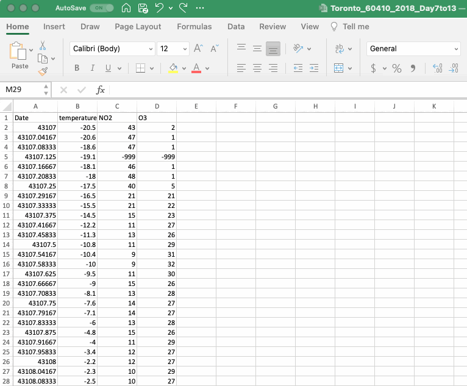

Section 3 Data Wrangling
This guide is written for the first-year chemistry courses at the University of Toronto but would be useful for a variety of applications in academia and beyond.
Working in the chemistry lab often involves the production and collection of data. When we collect data in the lab we often feel that any changes, or manipulations, to the data would be dishonest. However, the truth is that most data requires some manipulation as part of its analysis. In this section we will discuss how to import your data into excel (if it’s not already in Excel), how to format it and how to make educated, and transparent, decisions related to data manipulation.
3.1 File Upload
Many datasets (particularly larger ones) are stored as .csv files. The CSV file extension stands for comma-separate values file, a popular file format for storing data that you are bound to encounter again in your academic careers. As the name implies, CSV files contain data separated by commas; go ahead and open your file in Notepad/TextEdit or Microsoft Word if you want to see this. Excel can open CSV files and will often automatically assigned the comma-separated values into different columns. Once you open your .csv file using excel be sure to save it as an .xlsx file so that you can avail yourself of all of Excel’s features.

3.2 Data Organization and Cell Formatting
When you open a file in Excel notice how the values are arrayed in a table of cells, each containing a single value. These cells are arranged in columns with labelled headings (A, B, C, etc.) and rows (1, 2, 3, etc.). A single cell can be referenced using this system (i.e. in the gif above the cell “B3” contains the value “-20.6”).
If you open the CSV file from the NAPS program you will see the data organized into four columns with the following headers:
- Date & Time: This column indicates the day and time the air quality data was measured.
- Temperature: The ambient air temperature in degrees Celsius.
- NO2: The concentration of NO2 in the air in ppb.
- O3: The concentration of O3 in the air in ppb.
The temperature and concentration values provided are hour-ending averages, meaning that when you see temperature or concentration for 1 AM, it is the average of the measured values between 12 AM and 1 AM that day.
If any of your cells are not properly formatted, select these cells, then right click and select Format Cells… from the dropdown menu (you can also go to the Format menu and select Cells…). In the Format Cells dialog box you can see many formatting options, some of which are described in the table below. If your dataset includes a date you can format it so that it shows both the date and the time using the Custom category and the yyyy-mm-dd h:mm formatting option as shown below.

You might have noticed that the date values in the gif above was initially written as a series of numbers, that is because Excel stores date values as the number of days since 1900-Jan-0, with a decimal value corresponding to the time of day. In the table below, 44005 days have passed since then, so Excel can interpret this as a date value. This relationship between numbers and dates can also go the other way when your numerical value may incorrectly be interpreted as a date. Just remember that the formatting only affects how the numbers are displayed, not the numbers themselves.
| Category | Description | Example | ||
|---|---|---|---|---|
| General | Has no specific format and so for numbers returns the full numerical value | 44005 | ||
| Number | General display of numbers, can adjust the number of decimal places | 44005.00 | ||
| Scientific | Displays numbers using scientific notations, can adjust the number of decimal places | 4.40E+04 | ||
| Date (long) | A date format that gives day, month, year in full written notation | Tuesday, June 23, 2020 | ||
| Date (short) | A date format that gives day, month, year in condensed notation | 2020-06-23 | ||
| Custom | A date format that gives day, month, year as well as time of day that is useful for our needs in Experiment 1. | 2020-06-23 0:00 |
3.3 Data Manipulation
The word manipulation has a sinister connotation when referring to people, but in reference to data it is anything but. Data manipulation is the process of creating useful and meaningful datasets from which useful and meaningful information can be obtained. An example what and why of data manipulation can be found in the NAPS air quality datasets.
If you create a timeseries for your NAPS data (detailed instructions provided in the Data Visualization chapter) you may see something similar to the plot shown below. Does anything stand out about this plot? Are there any outliers or points that differ significantly from the others?

In this timeseries there are three points that are immediately suspicious. Our y-axis represents the concentration of either O3 or NO2, and one point has a reported concentration value of around – 1000 ppb, a physical impossibility. This issue arises because the instrumentation collecting the data reports a value of -999 when it identifies an issue with the measurement (maybe the instrument didn’t collect data, or it reported a failed calibration, or any number of other possible issues). The use of -999 was done purposefully as it is immediately noticeable, unlike a missing value which could be misinterpreted as zero.
It is clear this value of -999 will need to be removed, but how? Do we need to go through all 168 concentration values for each pollutant to find this outlier? Of course not! This is where we start to explore functions and operations in spreadsheet software to do this work for us! The Find function in Excel is great way to look for these -999 values. As its name suggest, the Find function can help you find things in your spreadsheet. This function can be found in the Edit menu, but a convenient shortcut is the search bar at the top right of your Excel window. Type -999 into this window and see what happens. If you find any -999 values you should delete the entire row that includes this data as simply deleting the -999 value in the cell will lead Excel to treat it as a zero for any mathematical manipulations.
You might notice a few things in the gif above. The first is that when the search bar is used to find the -999 values it is important that no cells within the sheet are selected, if cells are selected Excel will only search the selected cells. You might also notice that as the rows are deleted the plot updates automatically. This is useful when cleaning up the data, as in this example, but also when formatting the axes of your graph as their format will follow the format in the selected cells (more details on this in the Data Visualization chapter).
There are many many other data manipulation strategies and techniques which you will use throughout your time in the first year chemistry labs and beyond
How to end this section? Maybe with a comment on how visuzling the data was a useful way to assess the data?
- utility of data visualizaiton
- transparency of data manipulation